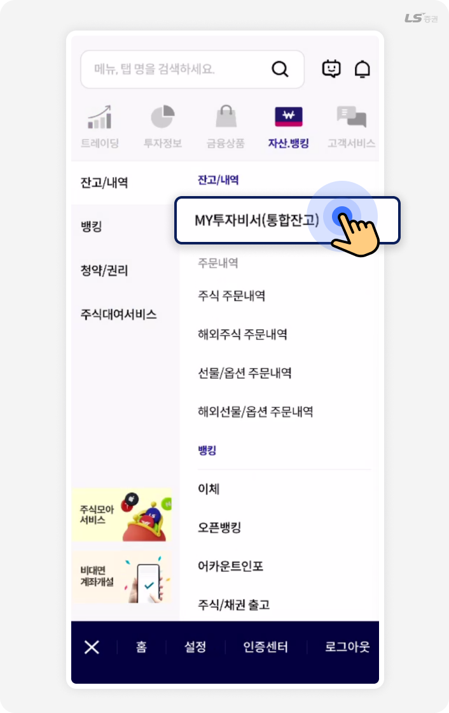
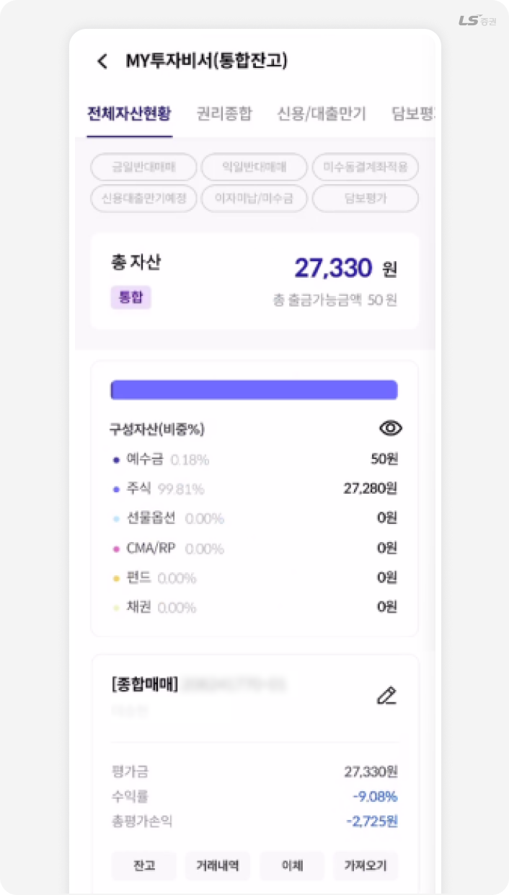
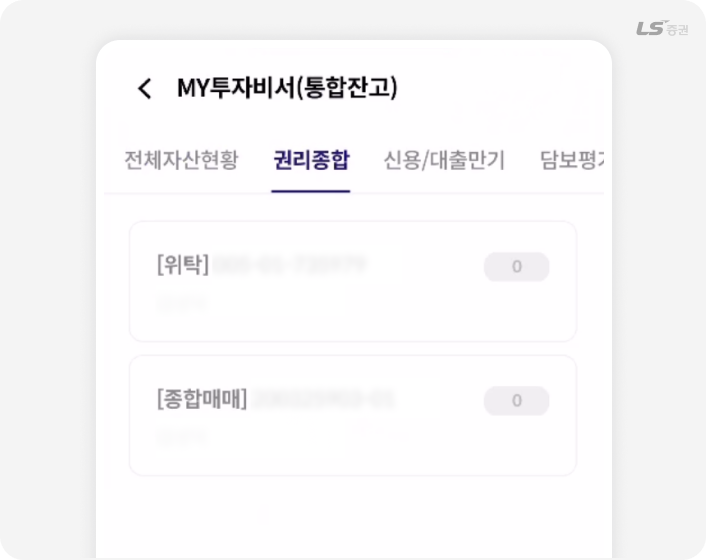
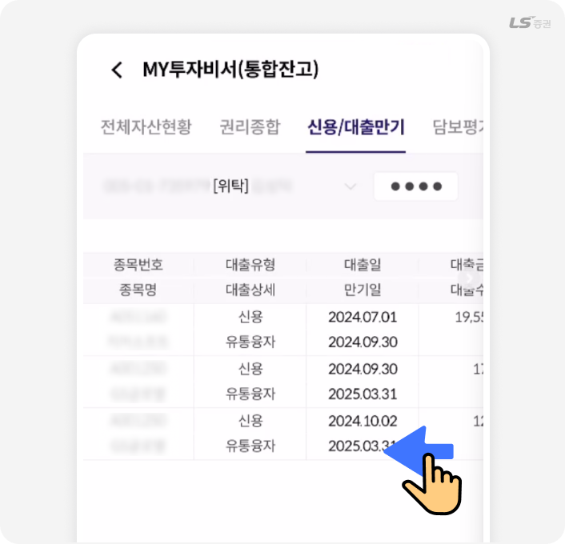
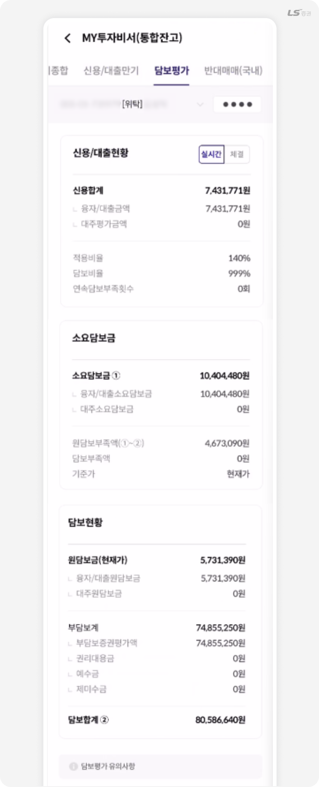
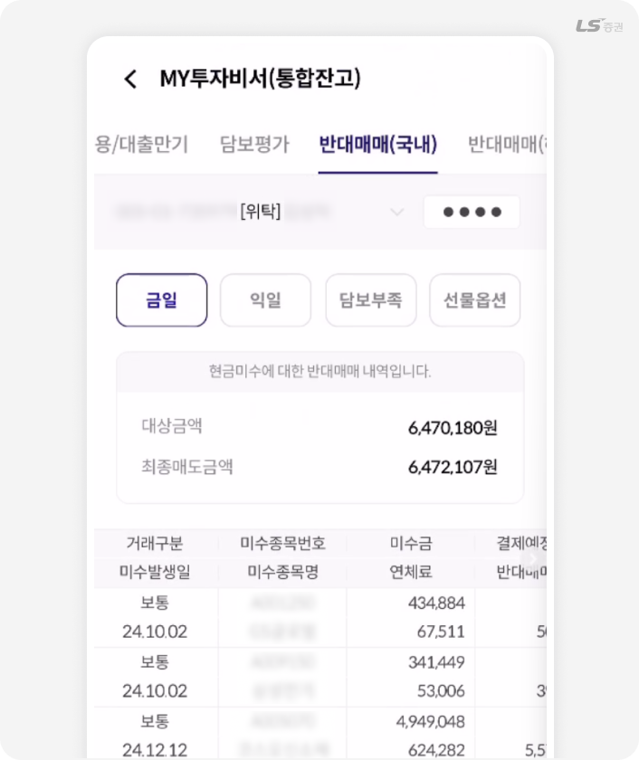
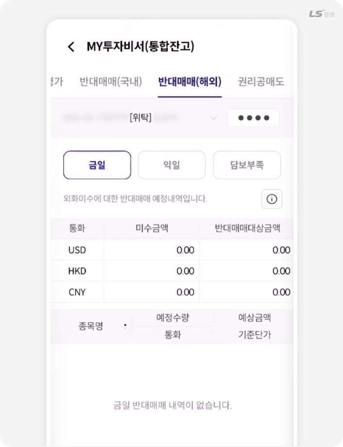
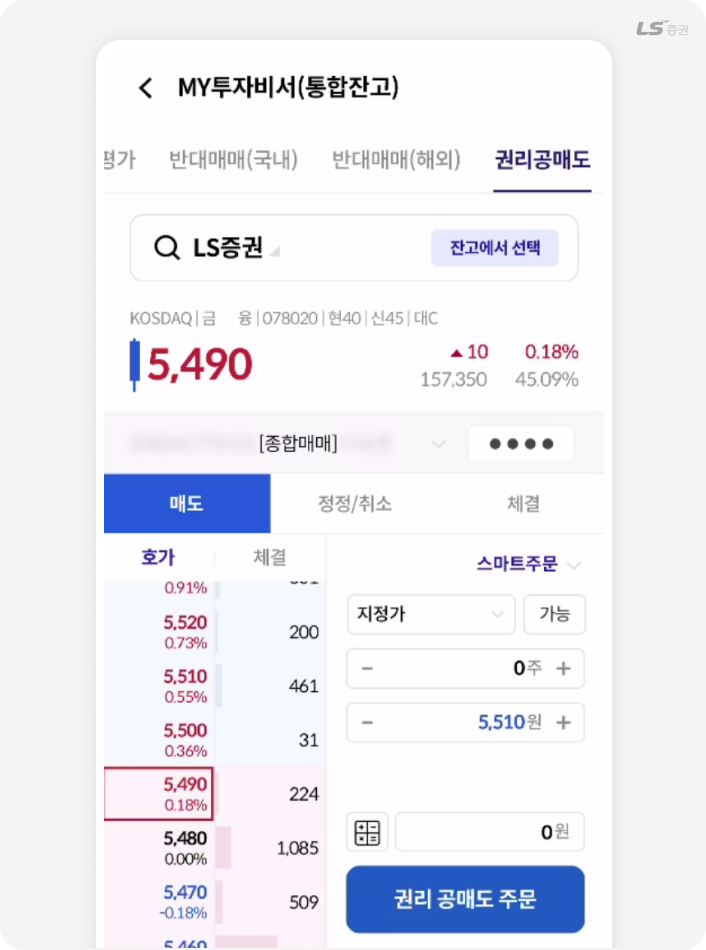

투혼 MTS 도움말
MY투자비서
내 자산, 지금 어디쯤일까?
한눈에 보는 종합 리포트
🤖 투자비서는 내 자산을
한눈에 정리해주는 도우미예요.
📊 예수금·주식·수익률까지
편리하게 확인해보세요!
전체자산현황
💡 내 자산이 어디에 얼마나 있는지 궁금할 때!
📊 예수금·주식 비중부터 수익률까지
즉시 확인하고 투자 방향을 잡을 수 있어요.
- 자산.뱅킹
- 잔고/내역
- MY투자비서(통합잔고)
- 전체자산현황
화면소개


‘전체자산현황’은 예수금부터 주식, 펀드까지 내 자산의 구성과 비중을 한눈에 볼 수 있는 화면이에요.
계좌별 수익률과 총 평가금액을 실시간으로 확인할 수 있어 흩어진 자산을 한곳에서 쉽게 관리할 수 있어요.
TIP!
구성자산 옆의 눈 모양을 누르면 자산 내역을 숨길 수 있어요. 공용 환경에서 개인정보 보호에 유용해요.
권리종합
📘 권리종합은 주주 권리 관리의 시작이에요!
배당, 청약, 주주총회 등 주식 보유 후 발생하는
모든 권리를 한눈에 확인할 수 있어요! 💰⭐
- 자산.뱅킹
- 잔고/내역
- MY투자비서(통합잔고)
- 권리종합
화면소개

‘권리종합’은 주식 보유로 발생하는 배당, 청약, 주주총회 등 모든 권리 정보를 한눈에 확인할 수 있는 메뉴예요. 여러 계좌를 이용하더라도 보유 종목의 권리 일정과 내역을 한 화면에서 편리하게 관리할 수 있어요.
놓치기 쉬운 권리 정보를 확인하며 추가 투자 기회를 챙기세요.
신용/대출만기
💡 “만기일이 언제였더라?”
매번 찾기 번거로우셨죠?
이 화면에서는 보유 중인 신용·대출 종목의
만기일과 금액을 한눈에 확인할 수 있어, 연장이나
상환 시기를 놓치지 않도록 도와줘요. ⏰
- 자산.뱅킹
- 잔고/내역
- MY투자비서(통합잔고)
- 신용/대출만기
화면소개

‘신용/대출만기’에서는 내가 이용 중인 신용거래나 대출의 만기일과 금액을 한눈에 확인할 수 있어요.
연장이나 상환 시기를 놓치지 않도록 만기 일정이 한 화면에 정리되어 계좌별 관리가 훨씬 편리해요.
복잡한 신용거래도 이곳에서 쉽게 관리해 보세요.
TIP!
계좌 비밀번호를 입력해야 현황을 조회할 수 있어요.
담보평가
💡 담보평가, 숫자만 많아서 헷갈리셨죠?
📊 신용·담보 현황을 한 화면에서 비교해,
내 자산의 안정성과 여유 한도를
쉽게 확인할 수 있어요.
- 자산.뱅킹
- 잔고/내역
- MY투자비서(통합잔고)
- 담보평가
화면소개

‘담보평가’는 신용·담보 현황을 한눈에 볼 수 있는 화면이에요. 보유 종목의 담보평가금, 부족금, 담보비율 등을실시간으로 확인해 위험 상황을 미리 파악할 수 있어요.
복잡한 수치 대신 핵심 정보만 깔끔하게 정리되어 있어 안정적인 신용거래 관리에 유용해요.
TIP!
담보비율 및 담보부족횟수 반영시간은 16시 이후이며 신용대주의 경우 당일 16시 10분 기준 105% 미달 시 그 다음날 반대매매가 처리될 수 있으니 유의하세요.
반대매매(국내/해외)
📉 주가가 떨어질 때, 갑작스러운 반대매매로
당황한 적 있으신가요?
⚠️ 담보비율과 반대매매 기준을 한눈에 확인해,
불의의 손실을 미리 예방할 수 있어요.
- 자산.뱅킹
- 잔고/내역
- MY투자비서(통합잔고)
- 반대매매(국내/해외)
화면소개


‘반대매매(국내/해외)’는 주가 하락 시 발생할 수 있는 반대매매 가능 상황을 사전에 확인할 수 있는 메뉴예요.
담보비율과 반대매매 기준을 미리 점검하면 강제청산에 따른 손실을 예방하고, 신용거래를 보다 안정적으로 관리할 수 있어요.
국내뿐 아니라 해외주식 계좌의 반대매매 현황도 한 화면에서 쉽게 확인할 수 있어요.
TIP!
반대매매는 전일 종가 대비 15% 하락 시 기준이 적용되며, 담보부족 내역은 별도 화면에서 확인할 수 있어요.
권리공매도
📉 공매도 주문은 보유하지 않은 주식을
빌려 먼저 파는 거래예요.
이 화면에서는 권리락 종목의 공매도 가능 여부와
주문 현황을 한눈에 확인할 수 있어요.
⚙️ 주문부터 정정·취소까지
한곳에서 빠르게 처리할 수 있어요.
- 자산.뱅킹
- 잔고/내역
- MY투자비서(통합잔고)
- 권리공매도
화면소개

‘권리공매도’는 권리락 종목의 공매도 가능 여부를 확인하고 주문으로도 연결되는 기능이에요.
보유하지 않은 주식을 빌려 먼저 파는 거래인 만큼 가능 종목, 잔량, 주문 내역을 즉시 확인하고 주문부터 정정·취소까지 한 화면에서 빠르게 처리할 수 있어요.
공매도 거래를 자주 하는 투자자라면 권리 종목 변동에 즉시 대응할 수 있어 매우 유용해요.
TIP!
공매도는 신용한도 및 잔고에 따라 주문 가능 여부가 달라지며, 권리락 종목은 거래 제한 기간이 있을 수 있으니 주문 전 반드시 확인하세요.